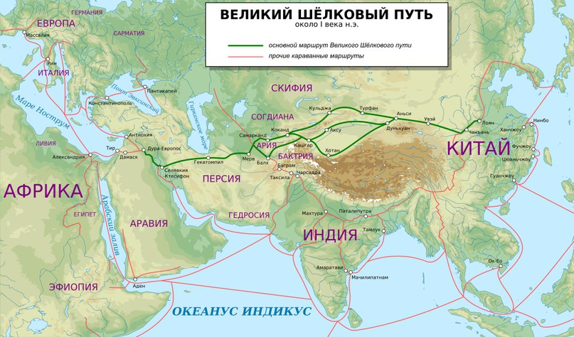

Как терпеливые китайцы веками пили горькую траву и морщились, варили чайный суп с луком, провозили кирпичи контрабандой, использовали 25 предметов для чаепития и наконец пришли к чайнику и пиалам. Чтобы восемь веков спустя снова заваривать чай десятком инструментов, варить в сифоне с огурцами и луком, взбивать венчиком и прийти к простоте и минимализму чайных церемоний.
Горькая трава
2737 г. до н.э — «Божественный земледелец» и «царь лекарств» Шэнь Нун открыл полезные свойства чая. Это не единственная легенда, рассказывающая об открытии чая, но наиболее известная. Каждый день мифический император Шэнь Нун любил попивать кипяток из большой чаши, сидя в саду под кронами деревьев. Однажды, пока вода кипятилась в котле, император заснул, а с дерева в воду упал лист. Это был лист Камелии Синенсис. Так в 28 веке до нашей эры был впервые заварен чай — освежающий эликсир от усталости и отравлений. У Шень Нуна было змеиное тело, бычья голова, тигриный нос и человеческое лицо. Он был сродни Прометею в Греции — научил людей готовить пищу на огне. Шэнь Нуну также приписывают изобретение сохи и коучинг в области вспахивания полей, устройство первого базара и несчетные познания в фармакологии. Хотя с фармакологией в доисторические времена было попроще.
1045 до н. э. – 221 до н. э — Династия Чжоу. Чай все еще в необработанном виде варят в кипятке, как суп. Иногда добавляют пряности, используют листья чая в салатах.
206 г. до н.э. – 221 г. н.э. — Династия Хань. Первые чайные сады в горах Мэн Шань в провинции Сычуань. Изготавливается первая специальная посуда для чая. Первая обработка чая: листья скручивают деревянными палочками и сушат. Перед чаепитием их толкут, заливают кипятком, добавляют лук, имбирь и листья цитрусовых.
222 г. н.э. — Безымянные аристократы пишут о том, что чаем можно замещать вино: бодрит и для здоровья полезно. Этакий древний ЗОЖ. Это примерно то же самое, что заменять бокал бургундского элеутерококком или борщом.
265-420 гг. — Династия Цзинь. Письменные источники упоминают о коллективных чаепитиях и чайных лавках. Их называли Чадянь —chá diǎn 茶点 — «чай и легкая закуска».
479 г. — употребление чая доходит до северного Китая. Зафиксированы случаи обмена чая на другие товары на границе Китая и Монголии. Так чай из Китая начал путешествие по Великому шелковому пути. Это древний караванный маршрут между Китаем и Аравией — теперешней Сирией, проложенный еще в 121 году до н.э. Везли не только шелк, но и военное снаряжение, драгоценные металлы, фарфор, кожу, шерсть, хлопок, экзотические фрукты, животных, рис, специи и чай. В обратную сторону шли караваны с арабскими скакунами, фруктами, вином и люцерной. Напомним, что чай здесь фигурирует еще как лекарственное средство и ингредиент. Интересно, что изобретения и полезные в быту вещи перенимались Западом у Китая, а не наоборот.

500 г. — Чай распространяется по северо-западной части Китая и в Тибете. Тибет расплачивается лошадьми. Здесь слишком суровые условия для плантаций, но чай помогает переварить жирную пищу и восполнить нехватку микроэлементов.
618-907 гг. — Династия Тан. Расцвет китайской культуры, искусства, архитектуры и ремесел. Китай жадно впитывает чужие культуры, воспроизводя их на свой манер. Чай начинают воспринимать как напиток — всё еще горький, полезный и кипяченый с солью, мятой и финиками. Слава богу, теперь без лука. «Чудесное снадобье» выращивают даосские и дзен-буддийские монахи, чтобы помочь себе на медитациях. Питие чая становится для них обязательным — предписания об употреблении чая при церемониях и практиках описываются в дзенском своде «Байчжан цингуй». Помимо Шелкового пути возникает Чамагудао — Древний чайный путь. По нему идет активная караванная торговля с Тибетом, Непалом, Индией, Турцией и Средней Азией. Народность Ханьцев мигрирует с севера страны на юг, перенимая южные традиции чаепития.
700 г. — В эпоху Тан произошла реформа языка. Написание «злак, трава 禾» в упоминаниях о чае заменили на «дерево 木». Чай становится не просто горькой травой, а обзаводится своим иероглифом cha 茶. Впервые этот иероглиф употребляется в переиздании медицинского Трактата Шэнь Нуна о свойствах растений 本草.
780 г. — поэт, писатель, актер, исследователь чая и воды Лу Юй написал Чайный канон — первую книгу о чае, где систематизировал знания, накопленные за полторы тысячи лет. В эпоху Тан ученые сводили воедино все доступные знания по всем областям через написание различных канонов. Канон чая состоит из трех свитков и десяти глав. Книга переиздавалась 60 раз вплоть до 1911 года. Первая глава «Истоки» рассказывает о произрастании чая и целебных свойствах. Глава «Инструменты» описывает набор для выделки чайного листа. В главе «Изготовление» описывается технология обработки и прессования в плитки. Глава «Утварь» рассказывает о 25 предметах для варки чая. Глава «Варка» (чжуча 煮茶) раскладывает поэтапно сам процесс. Чай тогда прессовали в плитки. Перед чаепитием их прокаливали на огне, чай измельчали до размера зернышек риса, засыпали в соленую воду и варили до готовности. Особенно ценилась густая пена, как в бульоне. Глава «Питие» — философские размышления о том, как правильно пить чай. Желательно не больше 5 чашек, чтобы «суп» не успел остыть. Глава «Труды» перечисляет все упоминания о чае. Глава «Произрастание» — справочник чайной географии Танской эпохи. Глава «Упрощения» дает разрешение упростить церемонию в определенных случаях. В главе «Схема» Лу Юй рекомендует как переписать и разместить текст канона в чайной комнате. Благодаря Канону Ча Цзин чай стал рассматриваться как один из главных источников государственного дохода. В этом же году власти вводят налог на чай.
Взбитый порошок
960-1279 гг. — Династия Сун. Чай становится не только напитком ученых и аристократов, но уходит в массы. «Народ пользуется чаем, словно рисом и солью — ни дня не обходится без него», — писал знаменитый сунский ученый и реформатор Ван Аньши в своем произведении «Опыт рассуждения о чае». В Сунскую династию кардинально меняется способ приготовления и пития чая — дяньча 点茶. Чай прессуют в блины, а перед чаепитием растирают в порошок, засыпают в чашу, заливают кипятком и взбивают до пены бамбуковой кисточкой — аналогом тясэн. Такой способ описывается в «Записях о чае» сановника Цай Сяна и в «Рассуждение о чае» сунского императора Хуэйцзуна. Этот же способ перенимают японские буддисты и привносят в Японию. Монах Эйсаи был восхищен китайским отношением к чаю. В 1214 году он написал «Записки о питии чая для питания жизни». Он доказывал пользу чая для физического здоровья и духовной жизни, связывал чайное действо и дзенские понятия гармонии и баланса. В Сунскую эпоху по всему Китаю распространяются керамические печи, в которых каждый регион производит свои виды чайной посуды.
1271-1368 гг. — Династия Юань. Монголы захватывают Китай, вырубают плантации. Чайная культура приходит в упадок.
Залитый кипяток
1368-1644 гг. — Династия Мин. К власти приходит выходец из крестьянской семьи и повстанец Чжу Юаньчжан. Он старался быстро восстановить экономику после войны. В 1371 году император вводит запрет на морскую торговлю — иностранцы допускаются в порт только с подношениями. В 1391 году вводится ограничение на экспорт чая и на изготовление плиточного чая. Теперь торговлю чаем может вести только государство и обмениваться только на лошадей, чтобы избежать коррупции и нелегальных государственных трат. Велено было делать саньча — рассыпной чай — его сложнее перевозить. За контрабанду чая вводится смертная казнь. Императору даже приходится казнить своего зятя за то, что он тайно вывез чай и избил пограничника. Заваривать стали по-крестьянски, привычным для нас способом — заливать цельный лист кипятком в чаше или чайнике. Для этого постепенно появляются чайники из глины или фарфора и тонкостенные фарфоровые пиалы. В эту эпоху также было написано около 50 трактатов о чае. В середине 16 века порт Макао открывается для голландцев. И в 1567 году морская торговля с Западом снова разрешена.
1610 г. — Голландцы впервые привозят чай в Европу. И с 1637-го начинаются регулярные закупки.
1644-1911 гг. — Династия Цин. Китай закрывается для иноземных государств. Условия торговли становятся всё строже и неудобнее для Европы — в 1647 году повторно вводится морской запрет. Это приводит к ухудшению отношений с Англией и другими западными странами.
1776 г. — Англия отправляет в Китай первую партию опиума — хитрая лазейка для получения выгодных условий торговли чаем.
1834 г. — Император закрывает все порты для иностранцев из-за нелегальной торговли опиумом.
1840-1842 гг. — Англия объявляет войну Китаю — первая опиумная война. Главная цель англичан — восстановить торговлю наркотиком. В результате в 1842 году Китай и Великобритания подписывают Нанкинский договор, в котором император обязуется выплатить 21 миллион долларов штрафа, отдать британцам Гонконг и открыть все порты. Опиум легализовали, из-за чего вымерла огромная часть населения.
1856-1860 гг. — вторая опиумная война в Китае посреди гражданской войны. В 1854 году Британия, Франция и США потребовали перезаключить Нанкинский договор — они стремились к неограниченной торговле опиумом и чаем и возможности посадить своих послов в Пекине. Цинский император отклонил эти требования. А в 56-м году задержал контрабандный корабль «Эрроу». Для британцев это был хороший повод, и они им воспользовались. В 60-м году война закончилась снова выплатой штрафа, открытием порта в Тяньцзине, передачей Цзюлунского полуострова и разрешением использовать китайских рабочих в британских и французских колониях.
Эксперимент
1904 г. — торговец чайно-кофейной лавки Томас Салливан случайно изобретает чай в пакетиках. В качестве рекламной акции он разослал потенциальным покупателям чай в пробниках — шелковые мешочки с порцией заварки на один раз. Кто-то из покупателей додумался кинуть мешочек прямо в чашку и сообщил об этом Салливану. Эта идея ему понравилась и он запатентовал изобретение.
1974 г. — создание технологии шу пуэра. Старший технолог Куньминской фабрики У Ци-ин изучает процесс естественной ферментации и влияние на него микроорганизмов. Результатом исследования стала технология ускоренной ферментации, которая используется в шу. В 83-м году У Ци-ин опубликовывает работу о роли грибков в ферментации чая и дорабатывает технологию скирдования.
1987 г. — в Японии разработана технология ГАБА-чая. В 90-х ее усовершенствуют на Тайване.
Дальше история постоянно сталкивается с новыми технологиями, приемами и «странными» сортами чаев. Чайная культура миксуется с кофейной и барной, не ограничивая себя в способах заваривания и ингредиентах чайных напитков. Появился красный чаи из улунского сырья, китайский чай улун зажаренный до черноты, выдержанный прессованный белый, чай в лаймах и огурцах и другие технологические и ботанические эксперименты. Посмотрим, куда это нас приведет. Дальше — только интересней.